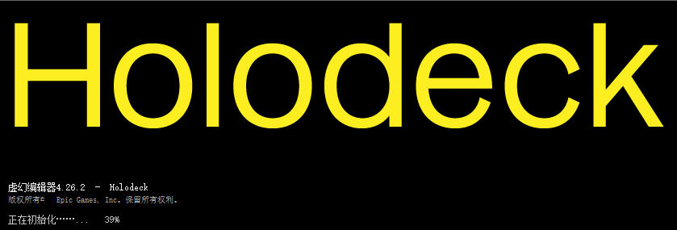
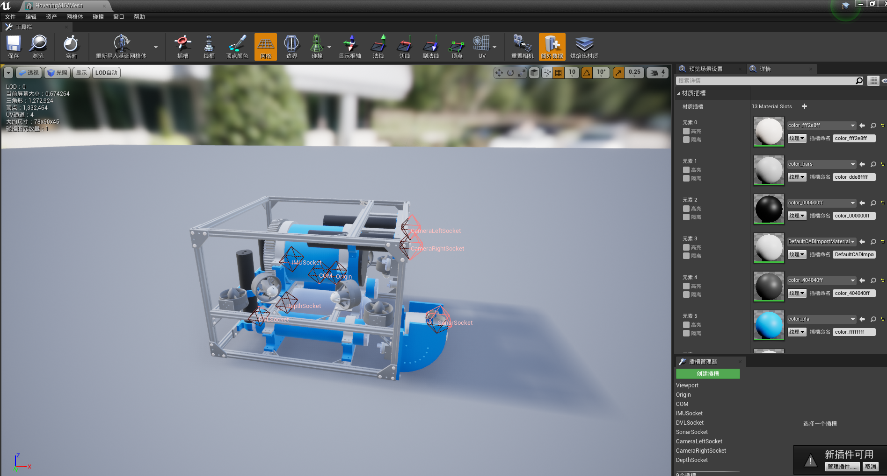

水下机器人 HoloOcean
全息海洋（Hologram, LoloOcean）其前身为“全息甲板(Hogodeck)”。
详细文档请参看 HoloOceam（参考文档请查看UE4.27归档版 ，文档的源码位于27_archival_develop目录）。
运行
编译
把引擎移出，调整引擎的版本为现有引擎版本
-
报错：Missing Engine/Binaries/DotNET/UnrealBuildTool/UnrealBuildTool.exe after build
解决：
"D:\hutb\Build\engine\Engine\Build\BatchFiles\GenerateProjectFiles.bat" -project="D:\hutb\Unreal\CarlaUE4\Plugins\Underwater\Holodeck.uproject" -game -progress
通过VS进行启动，启动画面为：

-
启动到92%报错：“打开地图文件失败。可能是因为该地图使用了较新版本的引擎进行保存。”
地图为：ExampleLevel.umap
没有在内容浏览器中显示的资产：Underwater\Content\HolodeckContent\Agents\NavAgent\NavAgentBlueprint.uasset、Underwater\Content\HolodeckContent\Agents\AgentSpectatorPawn.uasset、Underwater\Content\HolodeckContent\Agents\SphereRobot_Blueprint.uasset
资产 Underwater\Content\HolodeckContent\Agents\AgentFollower.uasset 打开编译报错。
可以打开相关的资产：

下面说明解决资产不兼容的问题。
将 UE4.27 的资产降级为 4.26
1.使用 Asset Downgrader（software/ue/AssetDowngrader.zip）中定制的 UE 5.4 虚幻编辑器打开一个空项目（也可以是需要降级的 5.4 项目，更低的版本项目没试过）。
2.将需要降级的 UE 4.27 的资产复制到空项目的 Content 目录下
3.从 UE 5.4 虚幻编辑器中，选中需要降级的资产，点击右上角菜单中的 DowngraderSelectedAsset，在弹出的对话框中，选中Target Version为4.26.2(experimental)，点击 OK 进行转换。
4.将转换后的Content中的资产拷贝到 4.26 的项目中即可。
使用 hutb 所对应的虚幻编辑器打开 hutb\Unreal\CarlaUE4\Plugins\Underwater\Holodeck.uproject 会不成功，需要按提示打开 VS，点击菜单的调试->开始调试（这个时候虚幻编辑器会重新编译！）
通过 UE 4.27打开工程
如果出现版本不兼容，选择原地覆盖转换（替换成了 hutb 模拟器所对应的 UE 4.26 打开。）。